Explore homechronicle's full feature set across 8 color themes, dark mode, device analytics, and mobile views.
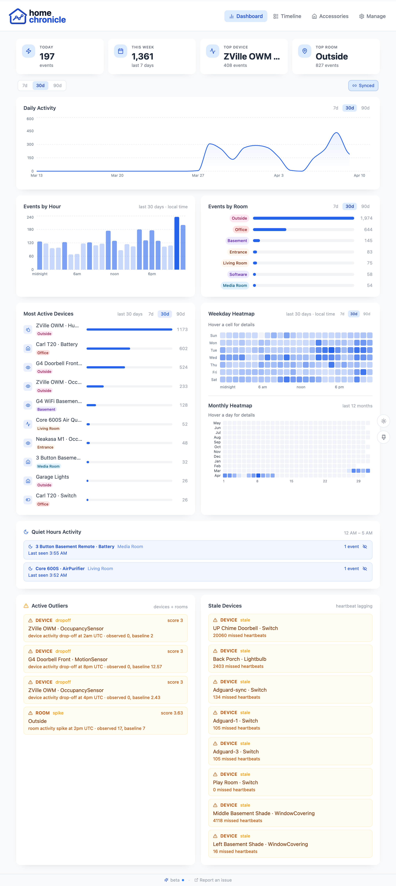
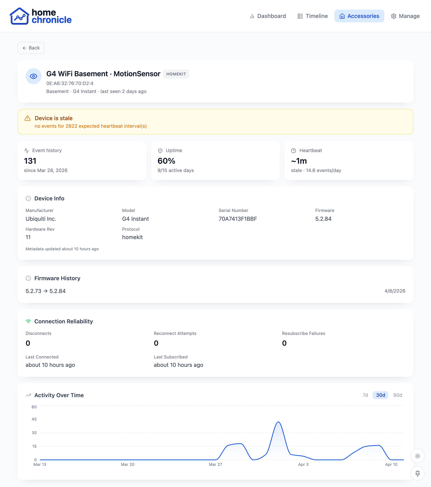
Complete view of a single accessory: event history, activity charts, connection stats, and device metadata.
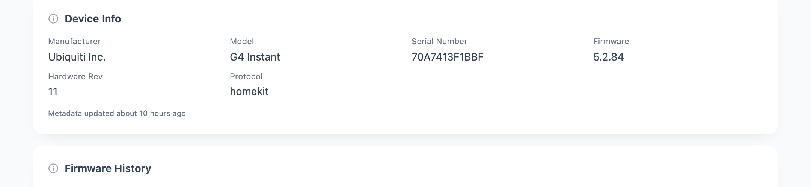
Accessory metadata at a glance: manufacturer, model, firmware version, bridge attribution, and pairing timestamp.
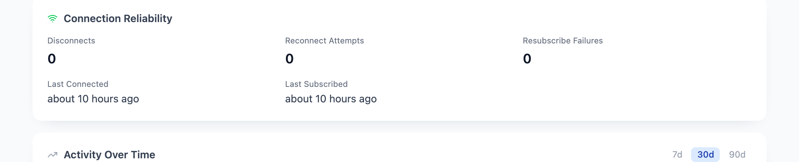
Track how reliably each device stays connected with uptime percentages and reconnect history.
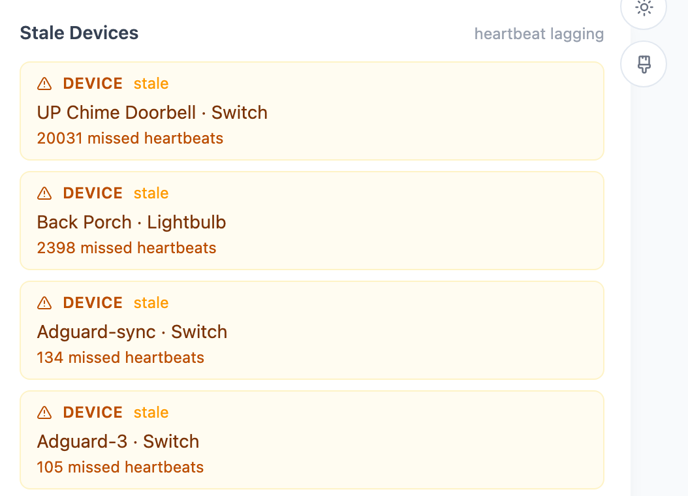
Accessories that have gone silent are flagged with last-seen timestamps and missed heartbeat counts.
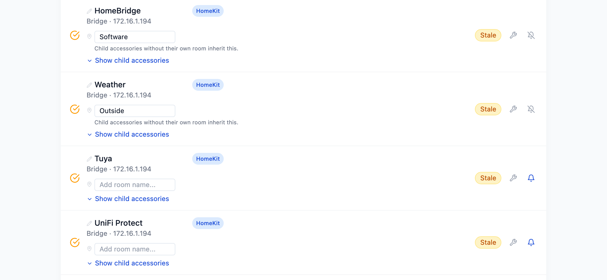
Expand any HomeKit bridge to see all child accessories it manages, with room assignments and event activity.
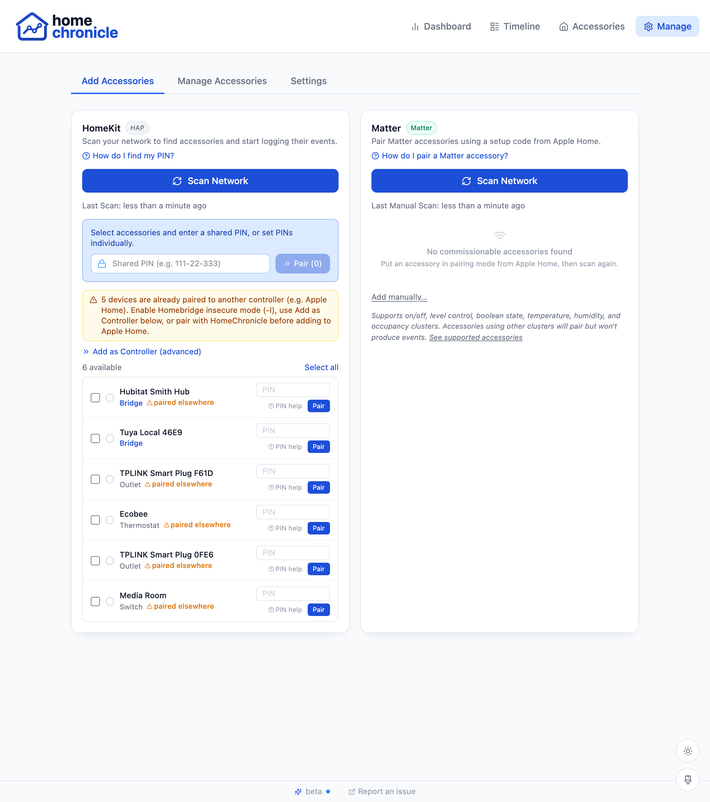
Discover accessories on your network via mDNS, enter PINs, and pair directly from the browser.
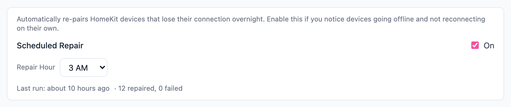
Configure automatic repair cycles for stale pairings. The listener re-pairs disconnected devices on a schedule.
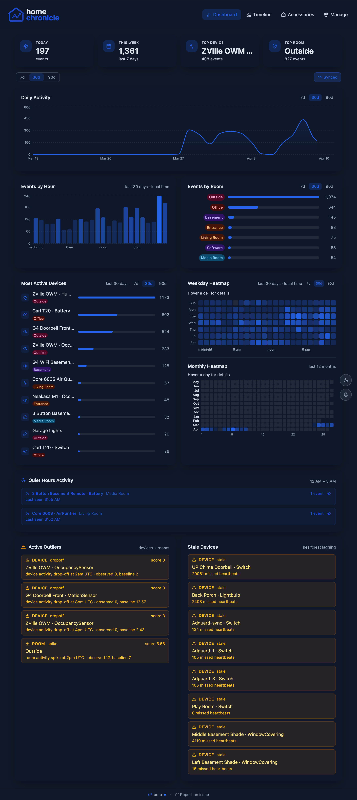
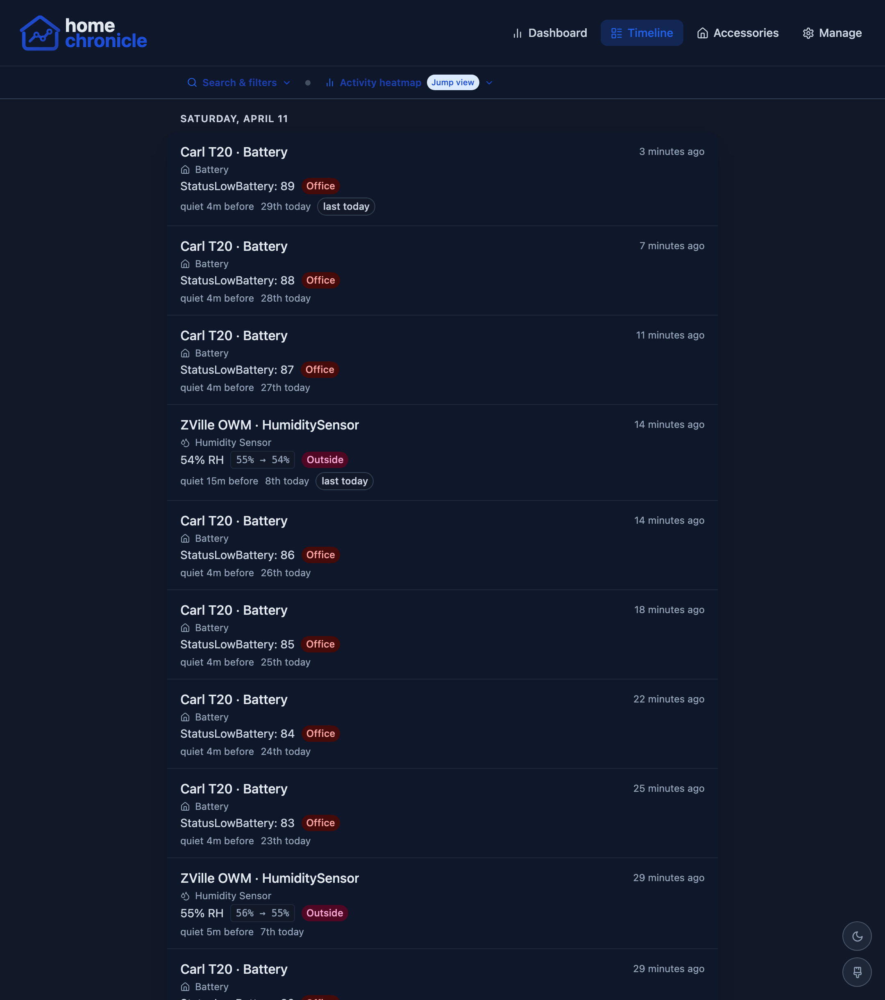
Event feed with dark backgrounds and high-contrast text for comfortable viewing.
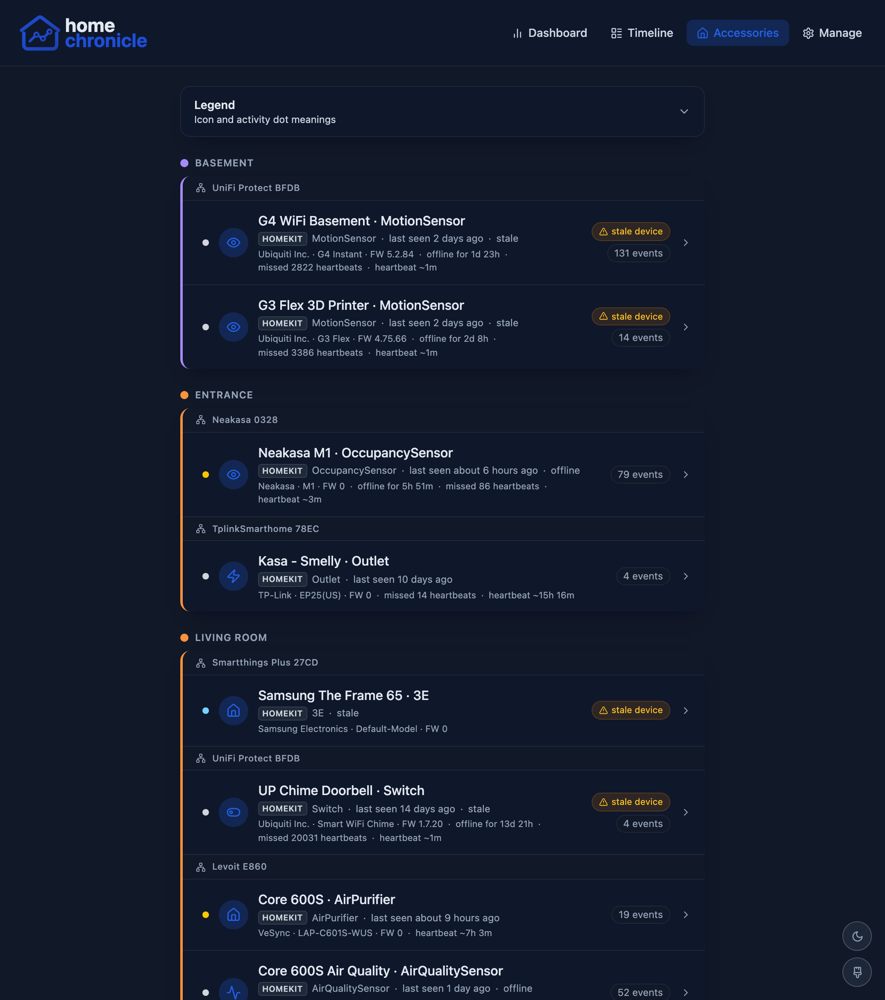
Device inventory with dark cards, activity indicators, and room grouping.
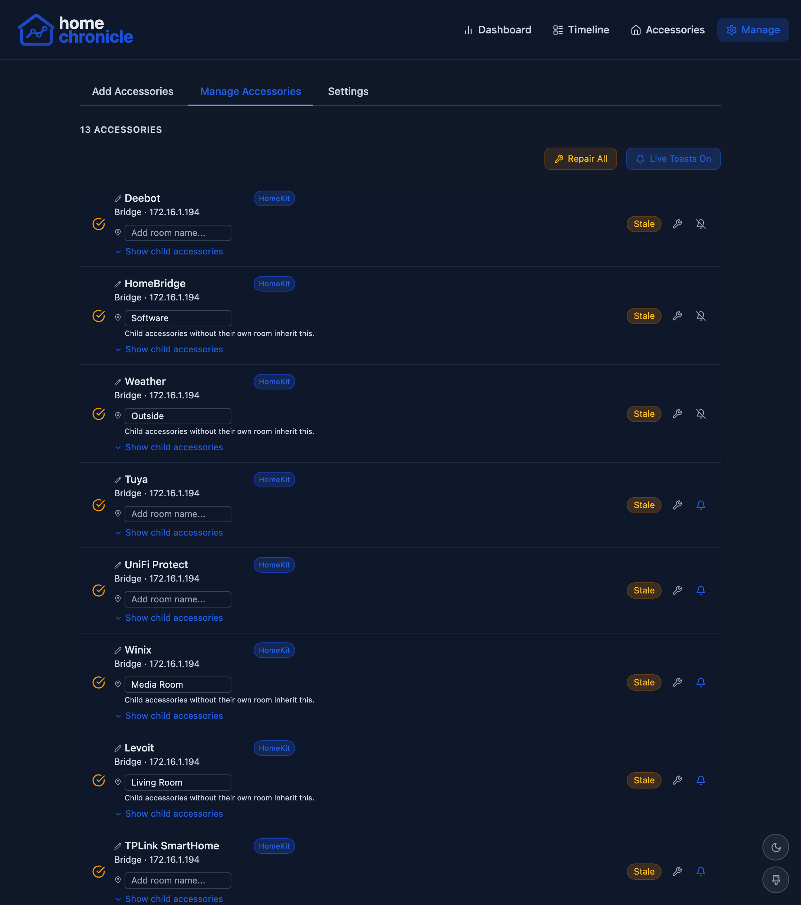
Device management, pairing, and settings all fully themed for dark mode.
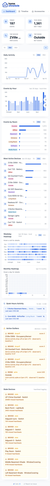
Full analytics on mobile
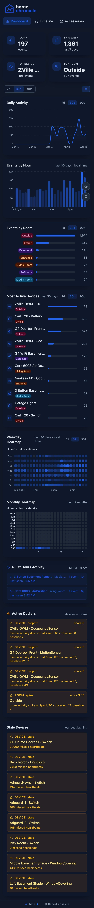
Dark mode on mobile
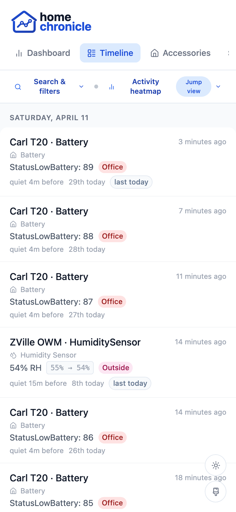
Scrollable event feed
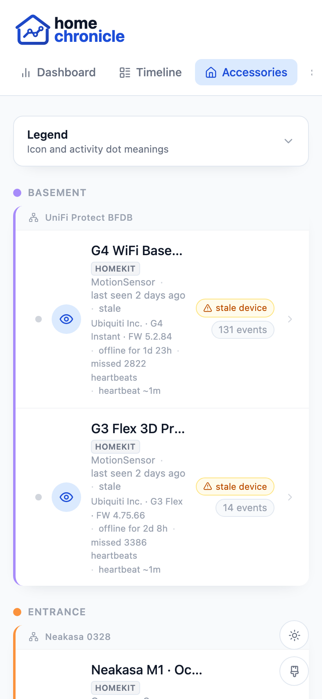
Device inventory on the go